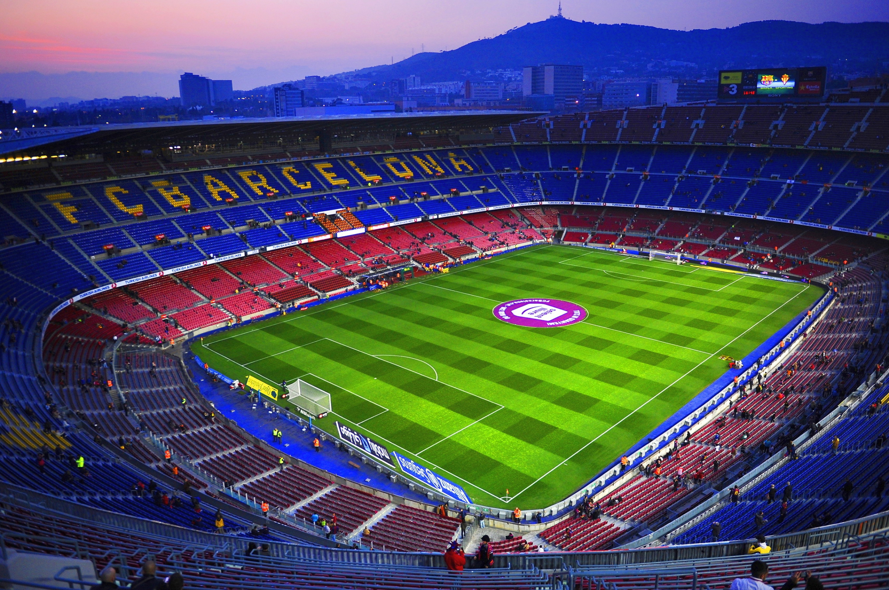
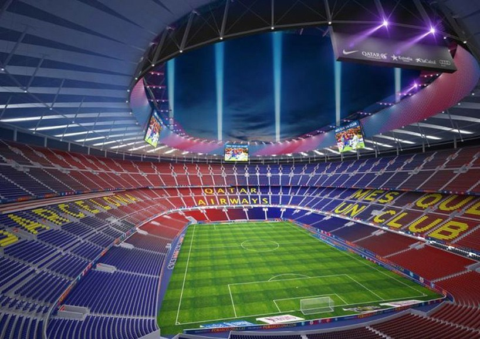
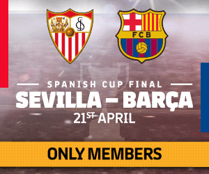
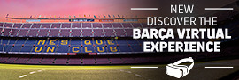
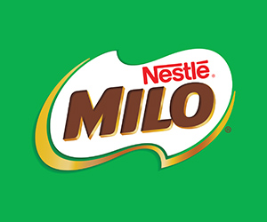
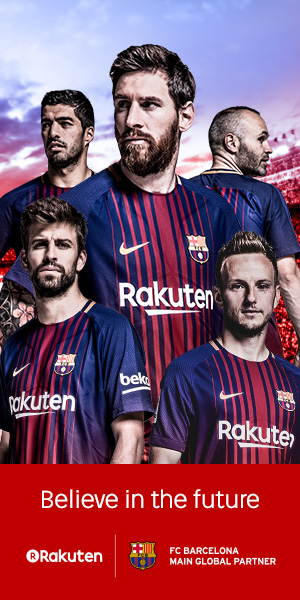

Introduction
Camp Nou (Catalan pronunciation: [kamˈnɔw], "new field", often referred to as the Nou Camp in English)is the home stadium of FC Barcelona since its completion in 1957.
With a seating capacity of 99,354,it is the largest stadium in Spain and Europe, and the second largest association football stadium in the world in capacity. It has hosted two European Cup/Champions League finals in 1989 and 1999, two UEFA Cup Winners' Cup finals, four Inter-Cities Fairs Cup final games, five UEFA Super Cup final games, four Copa del Rey finals, two Copa de la Liga final games, twenty-one Supercopa de España final games, five matches including the opening game of the 1982 FIFA World Cup, two out of four matches at the 1964 European Nations' Cup and the football competition final at the 1992 Summer Olympics.

History And Description

Camp Nou was built between 1954 and 1957, and officially opened on the 24th of September 1957 with a match between FC Barcelona and a selection of players from the city of Warsaw.The stadium replaced Barcelona’s previous ground Camp de les Corts, which, though it could hold 60,000 supporters, was still too small for the growing support of the club.Camp Nou initially consisted of two tiers that could hold 93,000 spectators. It was first called Estadi del FC Barcelona, but got soon referred to as Camp Nou.The stadium was, together with Estadio Santiago Bernabeu, playing venue of the Euro 1964 Championships.
It hosted the semi-final between the Soviet Union and Denmark (3-0), and the match for third place between Hungary and the same Denmark (3-1).The stadium hosted two Cup Winners’ Cup finals in the following decades, the first in 1972 between Glasgow Rangers and Dynamo Moscow (3-2), and the second in 1982 between Barcelona and Standard de Liège (2-1).Camp Nou got expanded with a third tier for the 1982 World Cup, which raised capacity to 120,000 places. During the World Cup, it hosted the opening match between Belgium and Argentina (1-0), three matches in the second group stage, and the semi-final between Italy and Poland (2-0).In 1989, Camp Nou hosted the European Cup final between AC Milan and FC Steaua (4-0), which was followed in 1999 by the Champions League final between Manchester United and FC Bayern (2-1).In the early 1990s, Barcelona started converting various standing areas into seating, which reduced capacity, though additional seats were created by lowering the pitch.Until the late 1990s, Camp Nou still had some standing areas at the top of the third tier, but these were finally eliminated, reducing capacity to just below 100,000.In contrast to the Bernabéu, Camp Nou has changed relatively little since its inauguration and lacks many of the modern facilities common in most stadiums these days. For the last decade, Barcelona have therefore been investigating either redeveloping Camp Nou, or even building a completely new stadium.In the mid 2000s, the club presented plans for a renovated Camp Nou, designed by Norman Foster, but a lack of funding prevented realisation. The club next started studying a move to a new stadium, but finally decided in 2014 to redevelop the current stadium.The redevelopment will entail the reconstruction of the first tier resulting in a steeper tier with better views, the extension of the top tier over the whole of the stadium, the construction of a roof to cover all seats, and expansions and improvements to the interior of the stadium aimed at providing better facilities. The resulting capacity will be slightly higher at a little over 105,000 seats. Works are planned to start in 2017 and gradually performed over four seasons to finish in 2021.
Renovation And Expansion

The club issued an international tender to remodel the stadium as a celebration of the stadium's fiftieth anniversary. The objective was to make the facility an integrated and highly visible urban environment. The club sought to increase the seating capacity by 13,500, with at least half of the total seating to be under cover. The intention was to make it the third-largest stadium in the world (in terms of seating capacity), after the Indianapolis Motor Speedway in the USA (297,000 capacity), and the Rungnado May Day Stadium in North Korea (114,000 capacity).On 18 September 2007, the British architect Norman Foster and his company were selected to "restructure" Camp Nou. With an estimated cost of €250 million, the plan included the addition of
10,000 seats for a maximum capacity of 106,000.
The FC Barcelona board approved the sale of their former training ground (the Mini Estadi) in order to finance the remodeling. The project was planned to begin in 2009 and to be finished for the 2011–12 season. However, due to the 2008 financial crisis and subsequent fall in real estate prices, the sale of the training ground was postponed and likewise the remodeling project. In May 2010, Sandro Rosell, then a candidate for president of FC Barcelona, dismissed the possibility of selling the Mini Estadi, saying it would be indefensible to "sell the crown jewels", and his election on 30 June 2010 effectively halted the plan to remodel Camp Nou.
In January 2014, Barcelona's board of directors rejected the option of building a new stadium and will instead remodel the Camp Nou to bring the capacity up to 105,000.The project is expected to cost around £495 million (€600 million) with work beginning in 2017 with a completion date of early 2021.A refinement of the plan was released on 26 May 2015, showing plans to add a canopy over the stands, and showing the plans for seating expansion in greater detail.
Tickets
Tickets for Barcelona games can be bought online, through the official website or Ticketmaster, at the ticket windows (taquillas) of Camp Nou, or through any of the other sales outlets, which include the local tourist offices and club stores. There are club stores on the Carrer de Provença 439 near the Sagrada Familia, on Plaça de Catalunya, and Maremagnum shopping centre in Barcelona’s city centre. If tickets remain, these can be bought at the ticket windows of the stadium on the day of the match (near gate 9). Barcelona sell out very few games per season, typically only El Clasico and high-profile Champions League matches. Tickets for El Clasico can only be bought by club members, and to get these you therefore need to search on the secondary market or use one of the many licensed agencies. The likes of viagogo and Ticketbis offer lots of choice and tend to be reliable, though needless to say that prices are high. Their prices for regular matches tend to be more competitive though, and can even be cheaper than face value so offer an alternative for the official route. Ticket prices depend on the opponent as Barcelona have divided their home games into multiple different pricing categories. For a typical match, expect to pay between €50.00 and €70.00 for a top tier seat behind the goal, between €60.00 and €110.00 for a lower tier seat behind the goal or upper tier seat on the long sides, and between €110.00 and €200.00 for the better seats on the sides. Prices will be even higher for some games, including, El Clasico and later stage Champions League games, and can be lower for a few low-profile games and Copa del Rey games.
Security
Camp Nou has received the 5-star award from UEFA. This requires certain security measures in the stadium. For example, the stadium is monitored with cameras, escape routes are sufficiently available and accessible, security and police ensure that there is no riots in the stadium or well-known hooligans do not even get inside of the stadium. That's how it is in Central Europe as well: in the league stadiums there is quite high security. Rioting or beating in between the "fan groups" is extremely rare in the stadium. The vast majority of visitors "only" want to see a football match. So it is not a problem at all to go to a game in the stadium with children. Overall, the problem of violent hooligans in Spain is much smaller than in many other countries. For security aspects, there is no reason not to attend a match of FC Barcelona.
Cost And Financing
Overall, the redesign of the area should cost € 600 million. Camp Nou is by far the biggest contributor with € 420 million. The new Palau Blaugrana costs € 90 million, the parking lots and infrastructure € 40 million, land purchases € 30 million and the new mini-stadium € 20 million. The original 8-year financing plan envisaged that around € 400 million will be generated by the new building itself and sponsors: € 200 million come from additional revenue from entrance fees and better marketing opportunities; € 200 million come from the naming rights at the new stadium. It is still supposed to be called "Camp Nou" and will only receive one sponsor supplement. A newer financing model from 2017 envisages € 400 million from the granting of naming rights, of which € 200 million will be used to build the stadium. Another € 200 million will be financed through loans. The funds were available with expiration of an old loan from 2015 on. The loan should have a term of 4 years.



